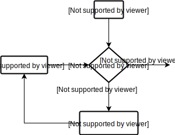
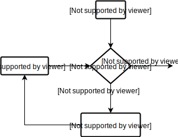
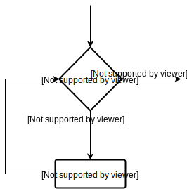
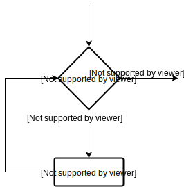
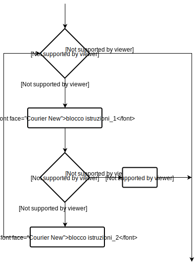
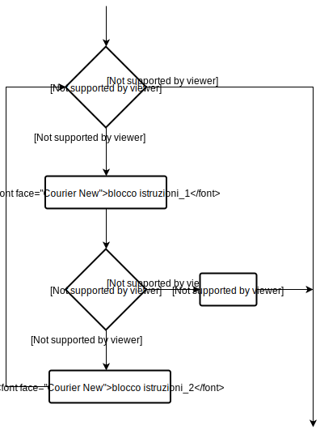
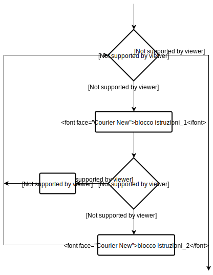
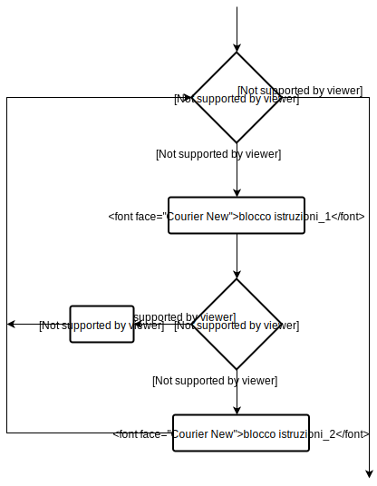

Cicli iterativi
I cicli iterativi sono largamente utilizzati in programmazione, e consistono nell'esecuzione di uno stesso insieme di istruzioni fintanto che una certa condizione viene verificata. Nel seguito, esamineremo i due principali cicli iterativi messi a disposizione dal linguaggio Python, ossia il ciclo
for e il ciclo while.
Ciclo for
Il ciclo (anche detto loop)
for è un costrutto che consente di ripetere una data operazione su ciascun elemento di una sequenza (che potrà essere, ad esempio, una stringa, una lista, una tupla o un dizionario). La sintassi prevista per l'utilizzo del ciclo for è:
for val in sequence:
blocco for
dove

A titolo di esempio, possiamo considerare il seguente script:
val è la variabile che prende, ad ogni iterazione, il valore di ciascun elemento della sequenza sequence. Il seguente diagramma di flusso sintetizza la logica del ciclo for nel caso in cui si consideri la sequenza sequence = range(n) (ovvero, si ha che sequence è la lista dei primi n numeri interi, da 0 a n - 1):

A titolo di esempio, possiamo considerare il seguente script:
"""
In questo programma calcoliamo la somma di
tutti i numeri contenuti in una data lista.
"""
# lista di numeri
numeri = [6, 5, 3, 8, 4, 2, 5, 4, 11]
# inizializziamo la variable che conterrà la somma
somma = 0
# iteriamo sugli elementi della lista
for val in numeri:
somma = somma + val
# output: La somma è 48
print("La somma è ", somma)
quando tale programma sarà eseguito, restituirà l'output:
La somma è 48
In precedenza, abbiamo fatto cenno alla funzione
range(). Tale funzione può essere usata per generare una sequenza di numeri interi; ad esempio, range(10) genererà la sequenza dei primi 10 numeri interi, cioè da 0 a 9.
Possiamo usare la funzione range() in un for loop per scorrere una sequenza di indici. Infatti, possiamo utilizzarla in combinazione con la funzione len() (che fornisce la lunghezza della sequenza) per iterare attraverso l'indicizzazione. Ecco un esempio:
"""
In questo programma iteriamo su di una lista
attraverso l'indicizzazione dei suoi elementi.
"""
genere = ['pop', 'rock', 'jazz']
for i in range(len(genere)):
print("Mi piace il ", genere[i])
Eseguendo il suddetto script, otterremo l'output:
Mi piace il pop
Mi piace il rock
Mi piace il jazz
Ciclo while
Il ciclo
while si differenzia dal ciclo for precedentemente descritto più a livello sintattico che funzionale; in generale è comunque possibile affermare che mentre nel ciclo for le iterazioni proseguono fino al raggiungimento dell'ultimo elemento della sequenza iterata, nel ciclo while le iterazioni continuano finché la condizione di test passata come argomento rimane vera. La sintassi prevista per l'utilizzo del ciclo while è:
while condizione:
blocco while
Nel ciclo

A titolo di esempio, consideriamo il seguente script:
while, l'espressione test, denominata in tal caso condizione, viene controllata per prima. Si eseguirà poi il blocco while solo se la condizione è vera. Dopo un'iterazione, l'espressione di test viene ricontrollata. Questo processo continua fino a quando la condizione diventa falsa. Di seguito proponiamo il diagramma di flusso che sintetizza quanto appena esposto:

A titolo di esempio, consideriamo il seguente script:
"""
In questo programma calcoliamo la somma dei primi n numeri interi:
somma = 1 + 2 + 3 + ... + n
"""
# Per prelevare l'input dall'utente, utilizzare l'istruzione:
# n = int(input("Inserire n: "))
n = 10
# inizializziamo la somma e il contatore
somma = 0
i = 1
while i <= n:
somma = somma + i
i = i + 1 # aggiorna il contatore
# stampa la somma
print("La somma è ", sum)
Eseguendo il suddetto codice, l'output sarà:
La somma è 55
Nel programma precedente, l'espressione di test sarà vera finché la nostra variabile contatore
i risulterà minore o uguale a n (10, nel nostro esempio).
Si noti che abbiamo bisogno di aumentare il valore della variabile contatore all'interno del blocco while. In caso contrario, infatti, si otterrà un loop infinito, in quanto il programma non riuscirà mai a considerare falsa l'espressione di test.
Istruzione break
L'istruzione
Data la sua natura, è logico dedurre che
break, quando impiegata all'interno di un ciclo iterativo, si occuperà di terminarlo in corrispondenza di un determinato evento, come per esempio il verificarsi di una condizione specifica.
Sostanzialmente break rappresenta uno strumento attraverso il quale influenzare il flusso di esecuzione di un ciclo e, più in generale, di un'applicazione.Data la sua natura, è logico dedurre che
break sia stato concepito per essere impiegato in associazione a condizioni introdotte tramite if, e di fatto la sua sintassi, nel caso di ciclo for (ma funziona analogamente col ciclo while) è la seguente:
for val in sequence:
blocco istruzioni_1
if condizione:
break
blocco istruzioni_2
In questo caso, il programma uscirà immediatamente dal loop non appena la

A titolo di esempio, è possibile analizzare lo script seguente, che riassume in poche righe il ruolo di
condizione viene valutata vera, senza perciò dover iterare su tutti gli elementi di sequence. Il diagramma di flusso seguente sintetizza quanto appena detto:

A titolo di esempio, è possibile analizzare lo script seguente, che riassume in poche righe il ruolo di
break nella terminazione di un ciclo iterativo, nel caso in cui la condizione definita tramite if risulti vera:
"""
Uso dell'istruzione break per terminare un ciclo
al verificarsi di una condizione introdotta con if.
"""
for val in "python":
if val == "h":
break
print(val)
print("Basta così.")
Eseguendo la piccola applicazione appena proposta si otterrà in output un risultato simile a quello mostrato di seguito:
p
y
t
Basta così.
In pratica il
for dovrà occuparsi di ciclare la stringa passata come argomento ("python") stampando uno per uno i caratteri che la compongono; teoricamente il loop applicato su tale sequenza dovrebbe dare luogo a sei iterazioni, tante quanti sono i caratteri che compongono la stringa, ma la condizione introdotta da if richiede che venga verificata l'identità tra il carattere iterato e "h"; se questa condizione dovesse essere soddisfatta allora break bloccherà l'esecuzione del ciclo impedendo ulteriori iterazioni, e verrà stampata la notifica prevista per questo caso (Basta così.).
Grazie all'istruzione di terminazione inserita in un costrutto condizionale avremo quindi soltanto tre iterazioni più un messaggio da parte dell'applicazione.
Istruzione continue
Come già sottolineato,
break risulta particolarmente utile quando si ha l'esigenza di terminare un ciclo in corrispondenza di una condizione precedentemente definita; in alcuni casi però lo sviluppatore potrebbe non necessitare di un arresto completo del loop, e voler semplicemente evitare che quest'ultimo produca delle specifiche iterazioni. A questo scopo è disponibile un'ulteriore istruzione denominata continue: essa in pratica arresta l'iterazione che soddisfa una determinata condizione, ma permette il proseguimento del ciclo nella quale viene impiegata. La sua sintassi, nel caso di ciclo for (ma funziona analogamente col ciclo while), risulterà essere:
for val in sequence:
blocco istruzioni_1
if condizione:
continue
blocco istruzioni_2
Esaminando più nel dettaglio la suddetta sintassi, avremo che, per ogni iterazione sugli elementi di

Per chiarire meglio l'utilizzo dell'istruzione
sequence, il blocco istruzioni_1 sarà sempre eseguito. Tuttavia, il blocco istruzioni_2 sarà eseguito solo per quegli elementi di sequence che non verificano il test condizione. Di seguito proponiamo il diagramma di flusso che sintetizza quanto appena detto:

Per chiarire meglio l'utilizzo dell'istruzione
continue, proponiamo infine una variante dello script esaminato nella precedente sottosezione:
"""
Uso dell'istruzione continue per arrestare un'iterazione
al verificarsi di una condizione introdotta con if
"""
for val in "python":
if val == "h":
continue
print(val)
print("Ciclo completato.")
Una volta eseguita l'applicazione appena digitata si otterrà in output un risultato come quello presentato di seguito:
p
y
t
o
n
Ciclo completato.
Anche in questo caso
for avrà il compito di ciclare una stringa, stampando in output, uno alla volta, tutti i caratteri da cui è composta; ciò però non avverrà se non in parte, perché if introduce una condizione di identità: nel momento in cui il carattere iterato dovesse essere uguale ad "h", questo verrà ignorato e non parteciperà al risultato del ciclo; il loop non verrà però interrotto, nel senso che verranno effettuate tutte le iterazioni successive previste.